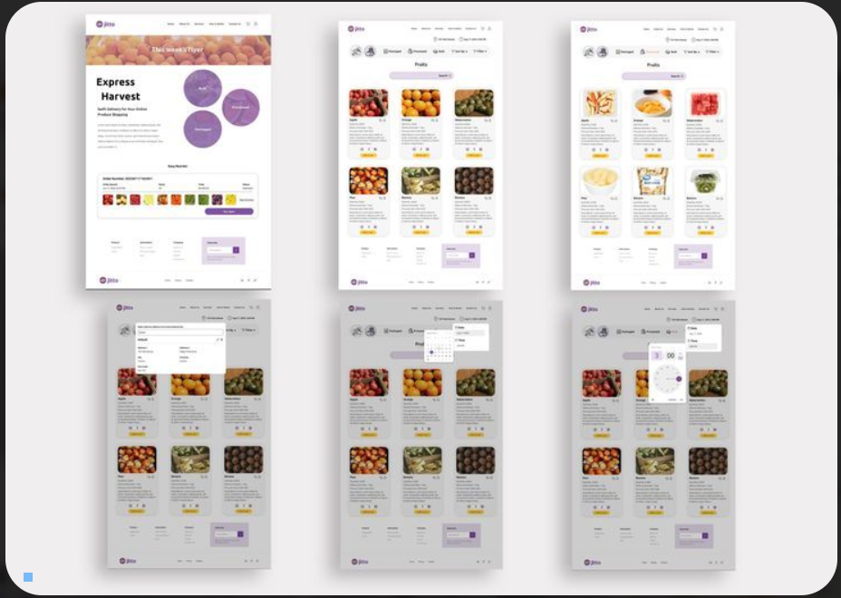

Project Title: Jitto - UI/UX Design
As part of a collaborative design team for Jitto Company, a produce delivery service, I played a key role in crafting the user experience for their digital platform. Our goal was to create a seamless and visually engaging interface that optimized the signup process and enhanced the post-login user journey. Using Figma, I designed over 30 wireframe pages, ensuring intuitive navigation and a frictionless experience for users.

Project Scope & Objectives
The project focused on two essential aspects of Jitto’s platform:
- Signup Process: Designing an intuitive, user-friendly signup flow to maximize conversions.
- Post-Login Experience: Creating an engaging landing page where users could efficiently navigate orders, track deliveries, and explore produce options.
The primary objective was to streamline the user journey, ensuring new customers could easily onboard while returning users had quick access to essential features.
Design Process
To achieve an effective and user-friendly design, we followed a structured approach:
User Research & Strategy
- Stakeholder Collaboration: Worked closely with Jitto’s team to understand business goals and customer pain points.
- Competitor Analysis: Analyzed similar delivery platforms to identify best practices and potential UX improvements.
- User Flow Mapping: Outlined step-by-step interactions for both new and returning users to minimize friction.
Wireframing & UI Design
Although the designs could not be fully prototyped due to the NDA, I continuously refined them through internal reviews and testing:
Using Figma, we developed detailed wireframes to visualize the structure and functionality of the platform:
- Signup Flow: Designed an intuitive multi-step form with clear progress indicators and minimal friction.
- Dashboard Layout: Created an easily navigable post-login landing page, prioritizing order tracking and produce selection.
- Visual Hierarchy: Ensured key actions like placing an order and checking deliveries were prominently featured.
Collaboration & Iterations
Since this was a team-driven project, collaboration was key:
- Design Reviews: Conducted iterative feedback sessions to refine layouts and improve usability.
- Prototyping & Testing: Created interactive prototypes in Figma for internal testing and refinement.
- Responsive Design: Ensured the wireframes were optimized for both desktop and mobile experiences.
Results & Impact
The final wireframes and UI designs led to significant improvements in the platform's usability:
- Simplified Signup: The redesigned flow improved completion rates, reducing user drop-off.
- Enhanced User Engagement: A clear, intuitive dashboard increased interaction with key features.
- Scalable Design System: The wireframes provided a solid foundation for future UI enhancements and development.